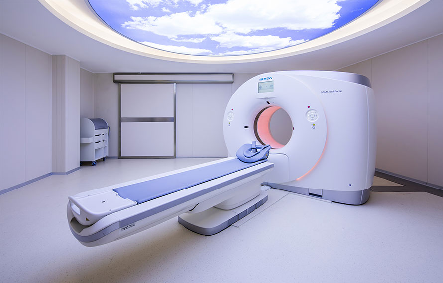

专家面诊
世界卫生组织指出，影响健康与长寿的因素比例为：遗传因素占 15%；环境因素占 17%
（包括自然环境、社会环境）；医疗因素占 8%；生活方式占 60%（包括饮食、运动、心
理等）。我们采用世界先进的数字化生活方式评估技术，通过采集个人生活方式信息：膳
食行为、膳食结构、运动、抽烟、饮酒、心理、睡眠、居住环境等，能从生活方式中早期
发现近百个健康隐患，为精准干预提供科学依据。
精准筛查
重大疾病（心脑血管及常见肿瘤）早期筛查及风险评估
世界卫生组织指出，影响健康与长寿的因素比例为：遗传因素占 15%；环境因素占 17%
（包括自然环境、社会环境）；医疗因素占 8%；生活方式占 60%（包括饮食、运动、心
理等）。我们采用世界先进的数字化生活方式评估技术，通过采集个人生活方式信息：膳
食行为、膳食结构、运动、抽烟、饮酒、心理、睡眠、居住环境等，能从生活方式中早期
发现近百个健康隐患，为精准干预提供科学依据。

综合深度精准筛查
全面筛查对于我们从都国际生命健康管理中心来说，意味着我们会创造一个数字化的身体
模型，这是基于最全面的，世界通用标准的医疗检测方法。健康中心将会为客户的身体和
系统建立3D或4D模型，模拟未来的健康状况，并采取必要的纠正措施。
风险评估
数字化生活方式评估
世界卫生组织指出，影响健康与长寿的因素比例为：遗传因素占 15%；环境因素占 17%
（包括自然环境、社会环境）；医疗因素占 8%；生活方式占 60%（包括饮食、运动、心
理等）。我们采用世界先进的数字化生活方式评估技术，通过采集个人生活方式信息：膳
食行为、膳食结构、运动、抽烟、饮酒、心理、睡眠、居住环境等，能从生活方式中早期
发现近百个健康隐患，为精准干预提供科学依据。
数字化疾病风险评估
采用定性与定量相关结合的方法进行疾病风险评估。
心脑血管系统疾病：冠心病、高血压、脑卒中（脑梗塞、脑出血）
恶性肿瘤：鼻咽癌、肺癌、乳腺癌、食管癌、胃癌、肝癌、宫颈癌、结直肠癌
代谢系统疾病：肥胖症、糖尿病
中医体质辨识
中医体质辨识，即以人的体质为认知对象，从体质状态及不同体质分类的特性，纠正体质
偏性，把握其健康与疾病的整体要素与个体差异，从而制定防治原则，选择相应的治疗、
预防、养生方法，进行“因人制宜”的干预。
个性干预
通过精准深度健康体检，由医师团队深度解读体检报告，做出健康评价、健康危险因素分
析、疾病风险评估与预警。依据精准深度体检结果及疾病风险评估结果，为客户提供《健
康体检报告》的同时，提供精准、个性化的干预方案，包含德国自然医学疗法及运动、饮
食、心理、保健及替代治疗方案，重塑健康生活方式是我们主要的干预手段。

动态监测
专属私人健康管理师随访督促并跟进会员的医嘱执行情况，落实治疗、用药及营养膳食、
运动等生活方式干预方案；同时国际医师团队根据随访及复查结果，科学评估干预效果，
及时调整或制定新的干预方案。